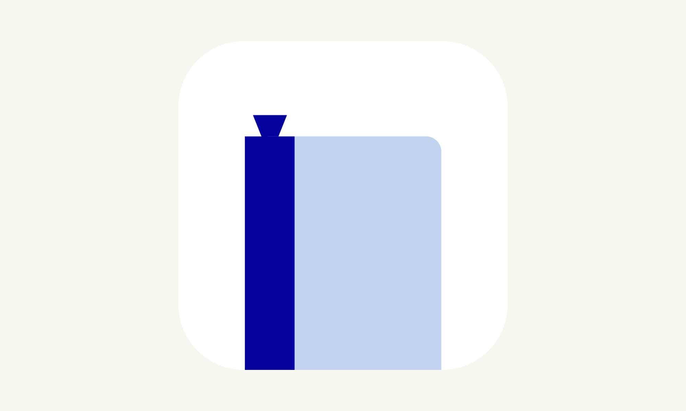

就活ノート
就活の進捗を記録できるメモアプリ
URL
作品紹介
「就活ノート」は、就活をもっと楽に管理できるメモアプリです。
「あの企業はこういうサービスを展開していて、その企業は福利厚生が優秀、いついつはこの企業で説明会がある。。。」などといった、企業の情報をまとめることはとても難しいですよね。
そこで、「就活に特化したアプリを作りたい！」という熱い思いから就活ノートは生まれました。
【機能一覧】
主な機能は以下の３つです。
・企業フォルダ
・ノート
・ToDoリスト
ノート・Todoは、企業との紐付けが可能であるため、企業ごとに見ることができます！
就活ノートは、iPhone標準のメモアプリに見た目が似ているので、操作もラクラク。
シンプルなデザインで、広告なし！
さいごに。
「就活ノート」は、個人によって開発されたものなので、機能足らずな部分があるかもしれません。
そのため、ぜひユーザーの皆様からのレビューを受け、より良いものにしていきたいです。
もし、ご不満やリクエストなどがある場合は、アプリ内の「設定→お問い合わせ」よりお申し付けください！
プライバシーポリシー
本アプリでは、個人を特定できる情報は収集しておりません。 Appleにより私(開発者)に提示されるアナリティクスのみを参照し、情報を収集しております。 例えば、アプリのインストール数や、アプリ内で起こったクラッシュ数などです。 ※ご不明な点があれば、お気軽にお問い合わせください。
お問い合わせ先
Mail: harukikoga.dev@gmail.com
Facebook: @8rukiKoga
Interface
SwiftUI
開発者メモ
自分のやりたいことをすべて実現できた。そんなアプリです。
自分自身が就活の管理に悩んでいて、AppStoreを一通り探してみたのですが、どれも一歩足らずなものばかりであったため、自分で開発しようと決意しました。
就活ノートを開発する上で重点的に意識したことは、開発した機能をバラバラに配置するのではなく、たとえばCompanyViewからその企業のノート・Todoが見れるような、全てが繋がるような設計です。
また、開発期間中に、株式会社フェンリルのエンジニアの方から、個人開発アプリのコードレビューを受ける機会があり、そこでこのアプリを提出しました。
そこでは、ファイル分けする目安、アクセス修飾子をつける必要性など、個人開発ではあまり意識することのない学びが多くありました。
また、提出するまでは、アプリのデータをUserDefaultsに保存するようにしていたのですが、コードレビューの際にCoreDataという技術を教えていただき、なかなか理解に苦しみましたが、結果的に実装でき、UserDefaultsよりも、多くのデータを保存できるようになりました。